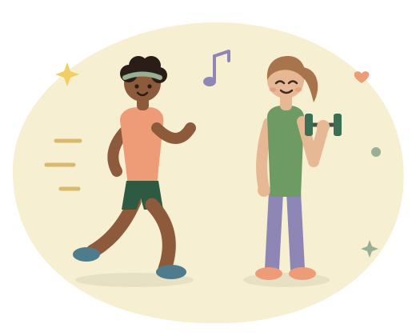
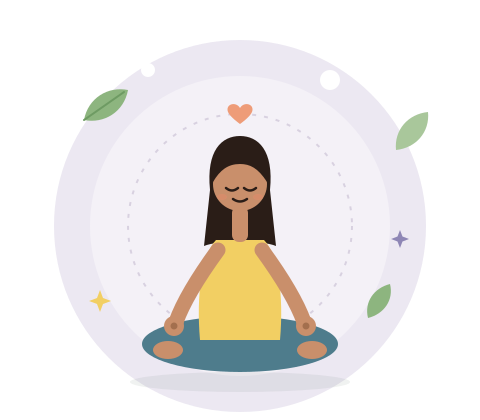
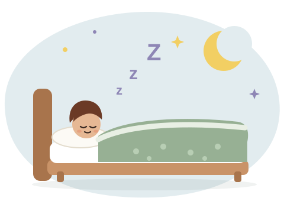

Beyond the plate
Feel good in your body and your mind.
Nutrition works best alongside everyday habits: moving in ways you enjoy, managing stress, sleeping well, and making time for the people and things you love. None of it has to be perfect or intense.
Established guidance
Movement
Move in ways you actually enjoy
Regular physical activity helps your body use insulin better, supports mood and energy, and benefits your heart, whether or not your weight changes. Walking, dancing, swimming, or playing with your kids all count.
Established guidanceThere's no number you have to hit. What matters is moving regularly, in a way that feels good and fits your life.
-
Exercise regularly
Try to move often. Consistency matters much more than how long or how hard you go.
-
Move throughout the day
Break up long periods of sitting with short walks, stretching, or taking the stairs.
Established guidance -
Start gradually
Begin with whatever feels doable and build from there. Starting small makes it easier to stick with.
-
Include strength training
Bodyweight moves, resistance bands, or weights help build muscle, which helps your body use glucose.
Research finding
Mind & stress
Your mental health matters just as much
Anxiety, depression, and body image concerns are more common with PCOS. That's not a personal failing, and caring for your mind is a real part of caring for your health.
Established guidanceTake a one-minute breathing break
Breathe in for 4 seconds, out for 6.
Slow breathing can help your body shift out of stress mode. Press start and follow the circle.

-
Manage stress
Try breathing exercises, journaling, gentle yoga, or a short walk when things feel like a lot.
-
Make time for hobbies
Reading, crafting, music, or cooking: doing something just because you enjoy it is good for you.
-
Stay connected
Spend time with friends and family. Talking to people who get it can make PCOS feel less isolating.
-
Limit unnecessary screen time
Take breaks from scrolling, especially from content that makes you compare your body or progress.
Feeling low or anxious for more than a couple of weeks? You're not alone, and support helps. Talk to your doctor: the PCOS guideline recommends checking in on mental health as part of care.

Sleep
Rest is part of the plan
Sleep problems, including sleep apnea, are more common with PCOS. Poor or short sleep is linked to higher insulin resistance, stronger cravings, and lower mood, so good rest supports everything else.
Association-
Prioritize sleep
Most adults need 7 to 9 hours a night.
-
Keep a consistent schedule
Go to bed and wake up at similar times, even on weekends.
-
Screens off before bed
Put your phone away 30 to 60 minutes before sleep.
Snoring loudly or waking up tired no matter how long you sleep? Mention it to your doctor.
Outdoors
Get outside and soak up the day
Fresh air, nature, and daylight are some of the simplest mood boosters there are.
-
Spend time outdoors
Time in green spaces is linked to lower stress. Walk in a park, garden, or eat lunch outside.
Research finding -
Get regular sunlight
Morning daylight helps set your body clock, and sunlight helps your skin make vitamin D. Protect your skin when the sun is strong.
Established guidance
Keep going
Pair your habits with good nutrition
Sources
This page is for education and doesn't replace advice from your doctor or mental health professional. Last updated September 2026.